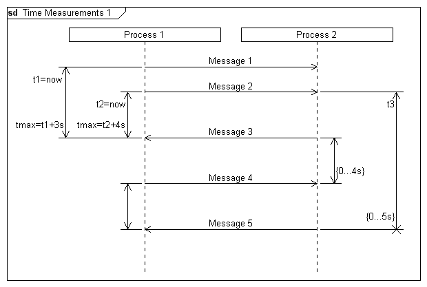
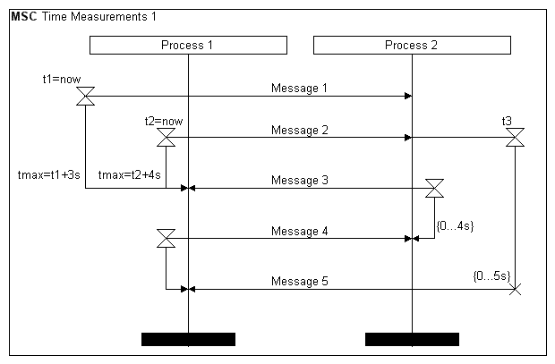

Syntax
Parameters
Syntax
Parameters
 timerid
text (optional)
style (optional)
timerid
text (optional)
style (optional)
| Value | Description |
|---|---|
| - | The time measurement ends normally |
| * | The time measurement is aborted |
Example
|
DiagramName: Time Measurements 1 DiagramStyle: uml PageSize: 620,auto PageMargins: 10,10,10,10 process: p1, "Process 1",,70 process: p2, "Process 2",,0,20 timerbegin: t1, p1, t1=now,l,o msg: p1, p2, Message 1; timerbegin: t2, p1, t2=now,l,n timerbegin: t3, p2, t3,r,i msg: p1, p2, Message 2; ; timerbegin: t4, p2,,r,n msg: p2, p1, Message 3 timerend: t1, tmax=t1+3s timerend: t2, tmax=t2+4s; ; timerbegin: t5, p1 msg: p1, p2, Message 4 timerend: t4,{0...4s}; ; msg: p2, p1, Message 5 timerend: p5 timerend: p3, {0...5s},*; |
 |
|
DiagramName: Time Measurements 1 DiagramStyle: sdl PageSize: 620,auto PageMargins: 10,10,10,10 process: p1, "Process 1",,70 process: p2, "Process 2",,0,20 timerbegin: t1, p1, t1=now,l,o msg: p1, p2, Message 1; timerbegin: t2, p1, t2=now,l,n timerbegin: t3, p2, t3,r,i msg: p1, p2, Message 2; ; timerbegin: t4, p2,,r,n msg: p2, p1, Message 3 timerend: t1, tmax=t1+3s timerend: t2, tmax=t2+4s; ; timerbegin: t5, p1 msg: p1, p2, Message 4 timerend: t4,{0...4s}; ; msg: p2, p1, Message 5 timerend: p5 timerend: p3, {0...5s},*; |
 |
See also